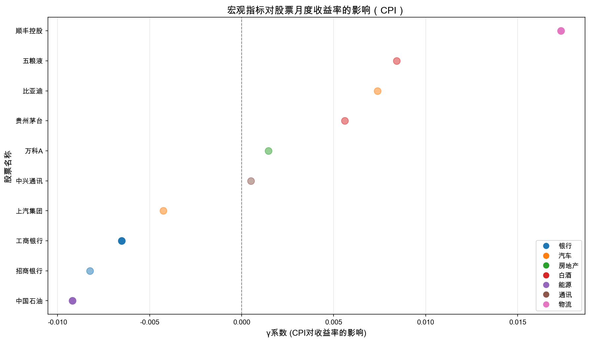

5 宏观指标对股票收益率的影响
本章分析宏观经济指标（CPI）对股票月度收益率的影响，探讨不同行业的敏感性差异。
5.1 模型设定
建立宏观指标对股票收益率的影响模型：
\[r_{i,t}^{\text{月}} = \alpha_i + \gamma_i \cdot X_t + \varepsilon_{i,t}\]
其中：
| 符号 | 含义 |
|---|---|
| \(r_{i,t}^{\text{月}}\) | 股票月度对数收益率 |
| \(X_t\) | CPI同比增速 |
| \(\gamma_i\) | 宏观敏感系数 |
| \(\varepsilon_{i,t}\) | 残差项 |
注意模型选择理由
选择CPI的原因：
- CPI反映通货膨胀水平
- 影响央行货币政策决策
- 与股市估值和盈利预期相关
- 数据公开透明，易于获取
其他可选宏观指标：
- M2同比增速：货币供应量
- 人民币汇率：外汇影响
- LPR利率：资金成本
- 工业增加值：实体经济景气度
5.2 回归结果
5.2.1 CPI对股票收益率的影响
| 股票 | 行业 | \(\hat{\gamma}\) | p值 | \(R^2\) | 显著 |
|---|---|---|---|---|---|
| 工商银行 | 银行 | -0.0065 | 0.001 | 0.152 | *** |
| 中国石油 | 能源 | -0.0092 | 0.060 | 0.054 | † |
| 顺丰控股 | 物流 | 0.0173 | 0.061 | 0.054 | † |
| 招商银行 | 银行 | -0.0082 | 0.192 | 0.026 | No |
| 上汽集团 | 汽车 | -0.0043 | 0.345 | 0.014 | No |
| 五粮液 | 白酒 | 0.0084 | 0.362 | 0.013 | No |
| 比亚迪 | 汽车 | 0.0074 | 0.526 | 0.006 | No |
| 贵州茅台 | 白酒 | 0.0056 | 0.456 | 0.009 | No |
| 中兴通讯 | 通讯 | 0.0005 | 0.962 | 0.000 | No |
| 万科A | 房地产 | 0.0014 | 0.820 | 0.001 | No |
注：† p<0.1, *** p<0.01
5.2.2 敏感性可视化

5.3 结果讨论
5.3.1 1. 敏感性差异分析
重要显著受CPI影响的股票
工商银行（银行）：γ = -0.0065，p < 0.01，高度显著
- 银行业对利率政策高度敏感
- CPI上升预期导致货币政策收紧，影响银行盈利
- 利率上升压缩银行利差
中国石油（能源）：γ = -0.0092，p < 0.1
- 能源行业与宏观经济周期高度相关
- CPI波动反映经济景气程度
- 油价与CPI存在联动关系
顺丰控股（物流）：γ = 0.0173，p < 0.1
- 物流业与消费景气度相关
- CPI反映消费活跃程度
- 电商发展带动物流需求
警告不显著的股票
白酒行业（茅台、五粮液）：
- 消费刚性强，对宏观敏感度低
- 品牌溢价抵御通胀压力
- 高端消费群体受经济波动影响小
房地产行业（万科）：
- 受政策影响更大，CPI敏感度不显著
- 行业处于调整期，其他因素主导
汽车行业：
- 影响渠道复杂，单一宏观指标解释力有限
- 新能源转型带来结构性变化
5.3.2 2. 经济逻辑分析
提示正向影响（γ > 0）
经济机制：
- CPI上升反映经济活跃
- 消费相关行业受益于通胀环境
- 物流、通讯等行业与经济景气正相关
受影响股票：
- 顺丰控股（物流）：+0.0173
- 五粮液（白酒）：+0.0084
- 比亚迪（汽车）：+0.0074
警告负向影响（γ < 0）
经济机制：
- CPI上升引发货币政策收紧预期
- 银行、能源等周期性行业承压
- 资金成本上升影响盈利
受影响股票：
- 中国石油（能源）：-0.0092
- 招商银行（银行）：-0.0082
- 工商银行（银行）：-0.0065
5.3.3 3. 投资启示
注意基于宏观环境的配置策略
高通胀环境：
- 增加防御性股票配置（白酒、消费）
- 减少银行、能源等负向敏感行业
- 关注通胀对冲资产
低通胀环境：
- 可增加周期性股票配置（银行、能源）
- 关注政策宽松带来的机会
- 布局物流等正向敏感行业
行业轮动建议：
- 关注CPI趋势变化
- 提前调整行业配置权重
- 结合多因素综合分析
5.3.4 4. 风险提示
重要分析局限性
- 样本有限：仅5年数据，时间跨度较短
- 单一指标：仅分析CPI，未考虑其他宏观因素
- 相关性非因果：统计关系不代表因果关系
- 历史不代表未来：过去的敏感性可能变化
5.4 小结
本章完成了宏观指标对股票收益率的影响分析：
| 分析内容 | 主要发现 |
|---|---|
| 敏感股票 | 工商银行、中国石油、顺丰控股受CPI影响显著 |
| 敏感方向 | 银行能源负向敏感，物流正向敏感 |
| 行业差异 | 白酒行业敏感度最低 |
主要发现：
- 银行和能源行业：对CPI负向敏感，通胀压力下表现承压
- 物流行业：对CPI正向敏感，经济景气时受益
- 白酒行业：对宏观敏感度最低，具有防御属性
投资建议：
- 根据CPI趋势进行行业轮动
- 高通胀期配置白酒等防御性股票
- 低通胀期可增加银行、能源配置
- 结合多因素综合判断